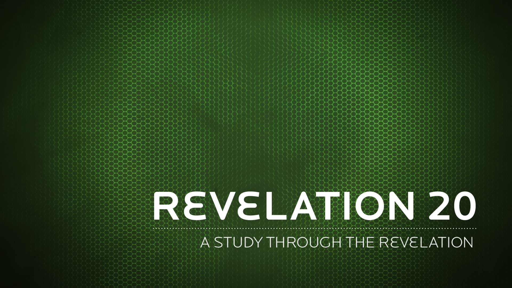

for every animal of the forest is mine, and the cattle on a thousand hills.
Psalms 50:10 NIV
But do not forget this one thing, dear friends: With the Lord a day is like a thousand years, and a thousand years are like a day.
2 Peter 3:8 NIV
"Or again, how can anyone enter a strong man’s house and carry off his possessions unless he first ties up the strong man? Then he can rob his house.
Matthew 12:29 NIV
The word of the LORD came to me: "Son of man, set your face against Gog, of the land of Magog, the chief prince of Meshech and Tubal; prophesy against him
Ezekiel 38:1-2 NIV
The whole thing is a set of pictures, of shifting, kaleidoscopic images, pointing beyond themselves
N.T. Wright
Lift up your eyes to the heavens, look at the earth beneath; the heavens will vanish like smoke, the earth will wear out like a garment…
Isaiah 51:6 NIV
and that you, O Lord, are loving. Surely you will reward each person according to what he has done.
Psalms 62:12 NIV
I the LORD search the heart and examine the mind, to reward a man according to his conduct, according to what his deeds deserve.
Jeremiah 17:10 NIV
For it is by grace you have been saved, through faith–and this not from yourselves, it is the gift of God– not by works, so that no one can boast.
Ephesians 2:8-9 NIV
The thief comes only to steal and kill and destroy; I have come that they may have life, and have it to the full.
John 10:10 NIV